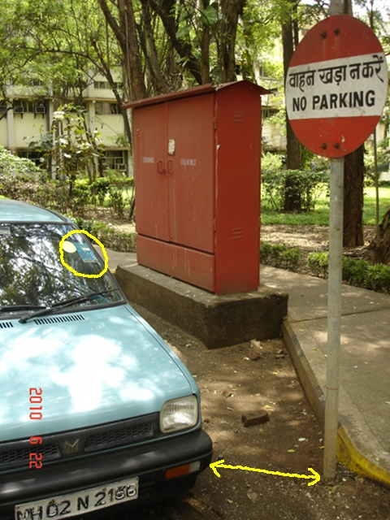
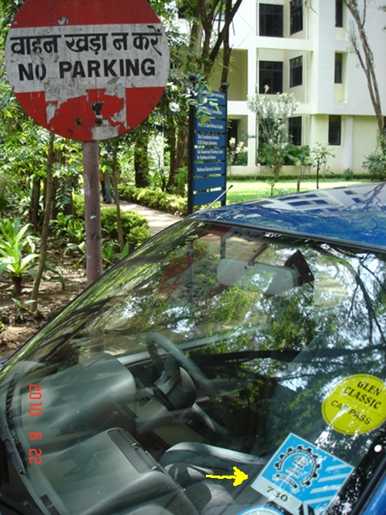

Being brought up in the excellent Indian tradition of non-silliness, it is no wonder that IIT students park their vehicles right on top of "no parking" signs on the ground.
(Ok, so the sign is a little faded, but it's quite readable, wasn't always this way, and hey, this is India. You fill in unreadable tenth-generation xeroxed forms to get a train ticket or a job.)
This singular inability or refusal of the so-called literate population to read, understand and follow instruction makes one wonder how many years of India are left.
Oh well, kids will be kids, and they were perhaps in a rush to get to lectures. An encounter with someone a little older than a boy in mid-2010 was an eye opener. It is a testament to the times that the following happened around July 2010 and I have not had time to write this up until early 2011. It means the amount of bad behavior is rapidly overruning people's ability to notice and chronicle it, leave alone deal with it.
|  |  |
Between P. C. Saxena Lecture Theater and KReSIT building lie a barely 15-feet wide stretch of road that is eternally congested by construction material, pedestrians, and badly-parked vehicles. On this stretch, at most four car lengths apart are two no-parking signs. Faculty/staff cars with clear IIT stickers are parked every day, not near, but right next to the no-parking signs (clear and in Hindi as well). In the left photo you can see a high-tension electrical junction box blocked off from possibly critical street access by the cyan car. In the right photo you can see a walkway with signs blocked off from pedestrians by the blue car, who must now bypass it by walking on grass.
It bothers me no end what kind of message about civic discipline this imparts to the "cream of the nation" we supposedly teach over here.
So one morning I was cycling down this road when I saw yet another faculty member (who probably wrote a PhD thesis in English) draw up to the no-parking sign like the cyan car, turn off the engine, and get out from the car. The ensuing conversation is reproduced with considerable accuracy below (AH=the unknown professor). It is quite entertaining.
SC: Morning, excuse me, when they say "no parking", would you know how many nanometers away you can legally park?
AH: (Appearing to think deeply) Hmm, yes. You know, that's a great question. I have no idea how many nanometers or Angstroms away one is allowed to park. Do you?
SC: No, but that's because I do not drive a car. If I did, I would know, and follow the rules. You are driving a car. Do you know the rule?
AH: Many signs are ambiguous. You have seen speed limit signs they have put up around campus. They just say "30". They do not say if it is km per hour or miles per second.
SC: Street signs are usually too small to print the constitution in large font. Citizens are supposed to know the law. At least, prevalent units of measure in use. Especially if they claim to be scientists and engineers.
AH: Why don't you go ask IIT security how close to a no-parking sign one can park and satisfy your curiosity?
SC: Isn't that your job, given you are the one parked here?
AH: (Trying to bail out with a diversion.) But how does this concern you? Are you a professor? Don't you have your research to do, classes to teach?
SC: I am a professor, so naturally bad public behavior on part of a colleague inside campus concerns me.
AH: You look very upset. Did you sleep well? Have you had a good breakfast?
SC: Wait, next you will ask me if I brushed my teeth this morning and changed my underwear. All that is not relevant to your parking habits. I am Soumen Chakrabarti from Computer Science. Who are you? Do you have an ID?
AH: I am (voice dwindles to a mumble so I cannot hear his name, honest) from Physics. If you want my ID you have to come with a security officer. (Walks off.)
So there you have it. A professor of a supposedly premier technical college, parking illegally and showing a big middle finger to a colleague for pointing it out. Of course, the more sophisticated and jaded among you are going, "Which planet is this guy from? This is a country where a 13-year-old boy can die because a bus conductor pushed him out for not carrying exact change and a government official can be burnt to death for accosting the kerosene mafia". But in a way this just reinforces what I am trying to say: There is no hope because many a member of even the educated urban middle class Indian is as much a vicious little prick as a member of the kerosene mafia. They would do anything in myopic self-interest and complete disregard for others, if only they could do so with impunity. Compared to this field of rotting moral cadavers, the often-trotted "moral vacuum" would be heaven.
It is also a bounding argument. If some of the most educated, most privileged sections of Indian society behave like this, then, on an average, reform depends on people even less prepared for civilization. (I already hear the few surviving closet commies claim that the less privileged is often more honest than the petty bourgeoisie IIT prof. To them I can only say: keep dreaming.)
Which brings me to the title of this sordid prose. Chemical imbalances in the brain, caused by serious illness or drugs, can make patients hallucinate and lose spatial cognition and coordination. They can jump off balconies, cut themselves with knives, or break their necks tumbling down staircases. If placed under medical supervision, they are usually restrained (tied up) for their own safety and recovery by the kindly and well-meaning physician, even though it looks like they have lost their last vestige of human dignity. But there is no alternative: not only is the patient incapable of caring for himself, he is an active threat to his own survival.
Who will do this for India?
The analogy used above is already imperfect: doctors are hardly a trusted and respected lot in India, and cannot often be relied upon to act in the patient's best interest. When it comes to the sphere of governance in the best interest of the governed, of course all bets are off. India has been quite the petri dish of social order the last millenium: emperors, petty kings, zamindars, colonial rulers, rule by brown sahibs, rule by sleek thieves, and finally rule by the mob---nothing seems to be working; we seem to be ungovernable. There is an impossibility theorem (regarding India's chances of lurching out of the steadily deepening hole some day) lurking around somewhere...